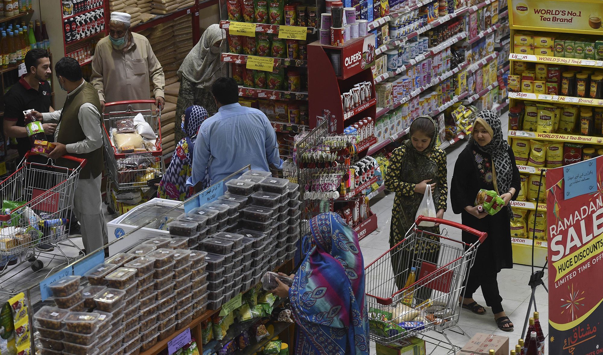
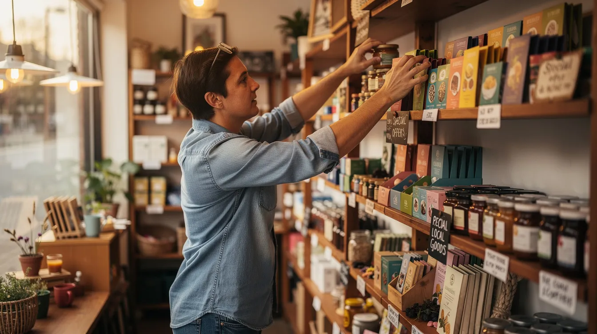
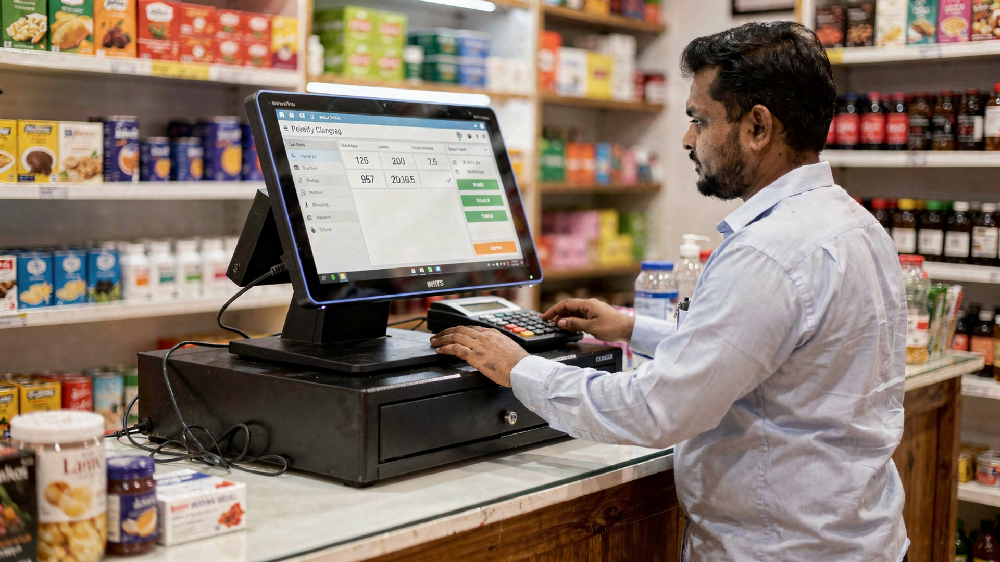
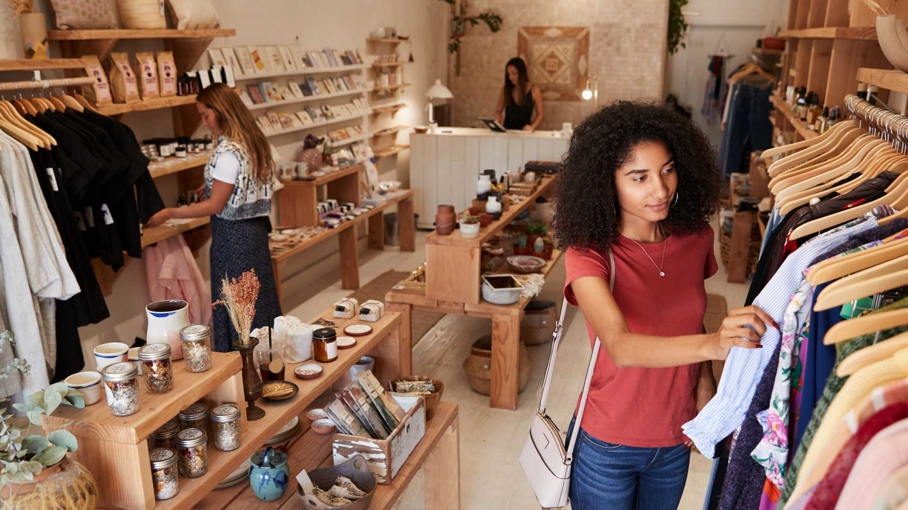

10 Proven Ways to Increase Sales in Your Retail Shop

A busy shop is not an accident — it is the result of deliberate sales habits.
Every shopkeeper asks the same question sooner or later: how do I increase my shop's sales? You cannot control the economy, the weather, or what the shop next door does. But you can control what happens inside your own four walls — and that is where most sales are won or lost.
The strategies below are not theory. They are habits used by successful kiryana stores, pharmacies, garment shops, and general stores across Pakistan and beyond. None of them requires a big budget. All of them compound over time.
1. Arrange Your Shop Like a Supermarket
Where a product sits decides whether it sells. Supermarkets spend millions studying this; you can apply the same science for free:
- Eye level is buy level — put your highest-margin items where customers' eyes naturally fall, not on the bottom shelf
- Daily essentials at the back — when customers walk past more shelves to reach atta, cheeni, and oil, they pick up extra items on the way
- Group related products — tea next to sugar and milk powder, shampoo next to soap; one purchase triggers the next

Smart product placement turns browsing into buying.
2. Never Run Out of Your Bestsellers
Nothing kills sales faster than a customer asking for something and hearing "khatam ho gaya hai." Studies in retail consistently show that a single stock-out does not just lose one sale — it sends the customer to a competitor, and many never come back.
Keep a simple rule: identify your top 20 selling items and check their stock every single morning. Set a reorder point for each. Modern billing software can warn you automatically when stock drops below your set level, so the shelf never goes empty on your money-makers.
3. Speed Up Your Billing — Queues Kill Sales
Watch your shop during rush hour. Every customer standing in a slow queue is a customer deciding whether to come back tomorrow. Long waits are one of the top reasons shoppers switch stores.
- Use barcode scanning instead of typing prices by hand — a 2-minute bill becomes a 30-second bill
- Keep the counter area clear so the next customer can step forward immediately
- During peak hours, have one person pack while another bills

Fast billing keeps the queue moving — and customers returning.
4. Use Smart Pricing and Small Discounts
You do not need to be the cheapest shop in the market. You need to feel like good value:
- Bundle deals: "surf + soap together Rs 50 off" sells two items where one would have sold
- Charm pricing: Rs 99 moves faster than Rs 100 — the psychology is real even in small shops
- Limited offers: "this week only" creates urgency that "permanent low price" never does
The key is knowing your margin on every item, so discounts increase volume without eating your profit. Guessing margins is how shops discount themselves into losses.
5. Upsell at the Counter — Every Time
The cheapest new sale is the one to the customer already standing in front of you. Train yourself and your staff to ask one simple question with every bill: "aur kuch chahiye?"
Place small, high-margin items near the counter — toffees, batteries, razors, small snacks. These impulse buys add 5–10% to daily sales with zero extra customers. It feels small; over a month, it is the difference between a flat shop and a growing one.
6. Remember Your Regulars — They Are Your Real Asset
It costs far more effort to win a new customer than to keep an existing one. Your regulars deserve to feel like regulars:
- Greet them by name and remember what they usually buy
- Keep their preferred brands in stock — losing a regular over one missing item is expensive
- A small occasional gesture (a free toffee for their child, a polite "shukriya") builds loyalty no discount can buy

Loyal customers are the foundation of steady sales growth.
7. Keep the Shop Clean, Bright, and Welcoming
Customers judge a shop in the first ten seconds. Dusty shelves, dim lights, and a cluttered entrance silently tell people to shop elsewhere. The fixes are free:
- Clean shelves and floors daily — a clean shop signals fresh, trustworthy products
- Good lighting on the entrance and bestsellers; dark corners hide products and customers
- A clear, readable shop signboard so new customers can find you
8. Use WhatsApp to Bring Customers Back
Almost every shopkeeper has customers' WhatsApp numbers — very few use them. A simple weekly broadcast works wonders:
- "New stock aaya hai — fresh dates and dry fruits available"
- "This week: cooking oil Rs 30 off per 5-litre pack"
- Festival reminders: "Eid ki shopping ke liye mithaas aur namkeen ready!"
Keep messages short, useful, and infrequent (once a week maximum). You are reminding them you exist, not spamming them.
9. Watch Your Numbers Every Day
You cannot grow what you do not measure. Spend ten minutes each evening on a day closing routine:
- How much did I sell today — and how does it compare to yesterday and last week?
- Which 5 items sold the most? (Stock more of these)
- Which items have not sold in 30 days? (Stop reordering dead stock — it locks up your cash)
- How much cash, udhar, and expense went through today?
Shopkeepers who review daily numbers spot problems in days; those who don't spot them in months, when the damage is done.
10. Train Your Staff to Sell, Not Just Bill
Your staff member at the counter is your salesperson. A trained one greets customers, suggests items, and handles complaints gracefully. An untrained one stares at the phone while customers wait.
Teach three habits: greet every customer, know where the top 50 items are, and always ask "aur kuch?" before closing the bill. And protect your business at the same time — staff should handle billing only, while buying rates, profits, and reports stay with you.
Service that feels personal turns one-time buyers into regulars.
The math of small wins: A shop doing Rs 50,000 in daily sales that lifts its average bill by just 8% through upselling, faster billing, and better displays adds roughly Rs 4,000 per day — over Rs 1.2 million in extra yearly sales — without a single new customer walking through the door.
The Bottom Line
Increasing sales is not about one big trick. It is about ten small habits done every day: stock what sells, bill fast, place products smartly, price with intelligence, upsell at the counter, remember your regulars, keep the shop inviting, message customers weekly, watch your numbers, and train your staff. Start with any three this week. Measure the difference. Then add the rest.
Want these sales habits to run on autopilot?
shopcos soft gives you barcode billing, low-stock alerts, bestseller reports, and day-closing summaries — everything in strategies #2, #3, and #9, automatic. Try it free for 30 days.
Start 30-day Free Trial